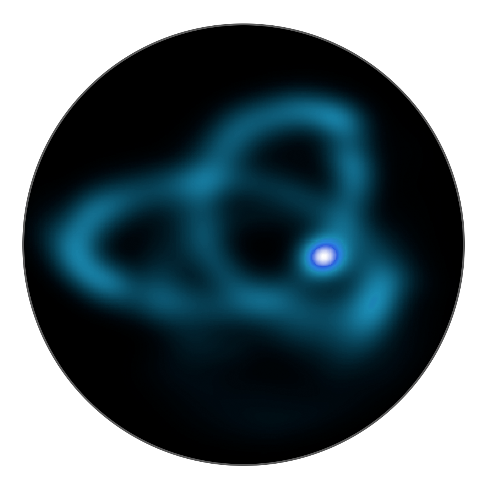

I'm an NSF graduate research fellow at Columbia University working with Kathryn Johnston on measuring the Milky Way potential using stellar debris in the Galactic halo. Before this, I worked for the Sloan Digital Sky Survey at NYU, and earned an Honors B.A. in Physics from NYU. When I'm not doing research or writing code, I'm probably still writing code, but also playing guitar, riding my bike, or taking photos.